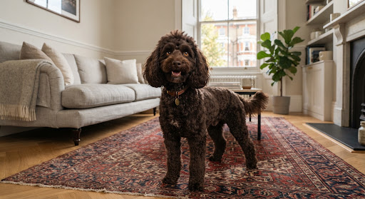

Free
The First 30 Days guide
A simple day - by - day checklist for bringing your toy poodle home.
Download the free First 30 Days guideFree. No email.

Just brought home a toy poodle?
A simple day - by - day checklist for bringing your toy poodle home.
Free. No email.
Practical help for life with a toy poodle. Guides, real owner experiences, and a little fun for the people who love these tiny dogs.
Pick a stage. It opens that part of the month.
Free
A simple day - by - day checklist for bringing your toy poodle home.
Download the free First 30 Days guideFree. No email.
A little break from puppy homework
Because there are no bad poodles. Only extremely well - served ones.
Real toy poodles. Real owners. Real little personalities.
A small, friendly place for people who live with toy poodles.
1.5 years - Apricot - Brooklyn
“Loves plush toys and sleeping in afternoon sunbeams.”

8 months - Chocolate - London
“Master of the high - speed hallway zoomies.”
3 years - Cream - San Francisco
“Agility trainee and dedicated lap expert.”

2 years - Red - Toronto
“Prefers humans to other dogs. Obsessed with cheese.”
Send @poodle.circle a photo and a few plain facts. That is the whole submission.
Skip a fact you do not know. If their Instagram should sit on the card, send that link too.
Submit on InstagramNew dogs are added here as they arrive. No account.
No puppy sales, breeding ads, or classifieds.
Poodle Circle is a practical, friendly guide for people living with toy poodles, especially during the first 30 days after bringing a puppy home. It is written for everyday owners. It is not veterinary care, and it does not sell puppies.
Every owner was once awake at 3 a.m. with an eight - week - old puppy. No judgment.
No breeding ads, brokers, or classifieds. This is a companionship circle.
We share habits, not doses. Illness and emergencies belong with a veterinarian.
Muddy paws, imperfect haircuts, and the actual dog who lives with you.
Quick answers to some of the questions toy poodle owners ask most often.
Food, bowls, a bed, a crate or pen, a harness, an ID tag, and an enzyme cleaner are what you will use this week. Shampoo, a nail grinder, and extra toys can wait. Hide cables and small objects, and block stairs a tiny puppy could fall down.
Before day 1Keep them in one quiet room where they can hear you. Take them out to toilet, then let them sleep. Skip visitors and a tour of the house. If they will not settle, they need sleep, not another game.
Your first nightComb to the skin at home between salon visits. Many pet trims are every four to six weeks. A longer coat can wait only while a comb still reaches the skin. A bath is for dirt, not for day 1 or every week.
Grooming at homeThey can learn it, starting with seconds, not a workday. Two hours is a later step, after shorter absences are calm. A young puppy still needs toilet trips and should not be left for a workday.
Alone timeBegin on day 1. Take them to the same spot after waking, eating, and playing, and when they sniff or circle. Praise the finish. Clean an accident with an enzyme cleaner, and do not punish it. A young toy poodle cannot hold on the way an adult can.
House trainingThe first time outside is a toilet trip on day 1, then back to a quiet room. Longer walks wait until a harness stays on. Carry them on a steep flight until they are steady.
Stairs, cold, and hawksThe first week is a sleeping area, meals at steady times, and a plan for the first vet visit. The first day itself should be one room and a nap. Week 2 adds a minute alone, then a short brush and the harness indoors.
The first 30 daysThis site shares habits, not doses. A puppy who is weak, collapsing, or refusing food should see a veterinarian. So should a limp after a fall, panic that keeps getting worse when you leave, or skin that is red, smelly, or broken.
Our principles